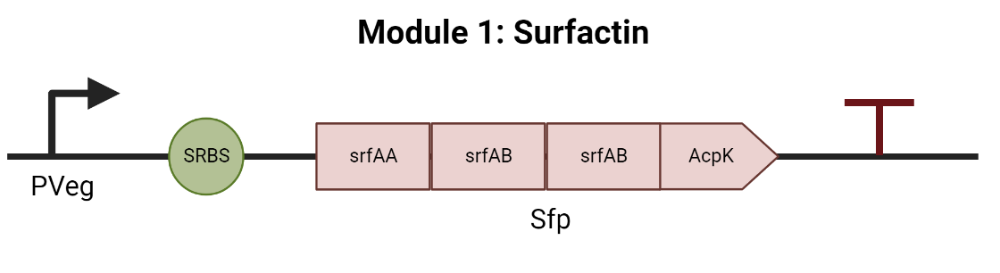
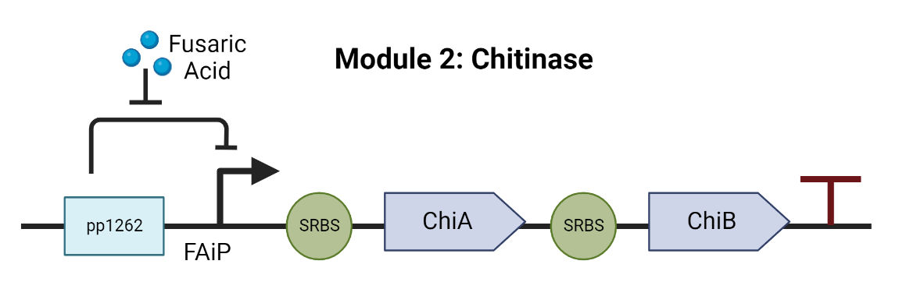

Genetic circuit
After many meetings with our stakeholders, we concluded that the idea which we would develop had to meet the following requirements:
Having these criteria in mind and after extensive research we developed BerryVax: a biological system that uses the qualities of Bacillus subtilis as a natural beneficial organism for berries. Our proposal is to stimulate the overexpression of surfactin, one of the main elicitors of B. subtilis which strengthens the plant (Coutte & et al., 2015). Furthermore, BerryVax strives to provide the ability to detect infections caused by F. oxysporum and release antifungal only when this pathogen is detected.
In the Labs group, we decided to implement the engineering DBTL cycle (Design-Build-Test-Learn) for the design and construction of our genetic circuit. This was achieved by always having in mind the following three main questions:
Cycle 1
DESIGN
As a first prototype, we designed a genetic circuit that consists of two modules that were able to regulate each other like a “switch” (Figure 1.). Module 1 (top of Figure 1): Surfactin, aims to overproduce ilv-leu to promote the metabolic route of leucine and increase the production of biosurfactin (Coutte & et al., 2015) and gtgR, a suppressor of the promotor of Module 2 (bottom of Figure 1): Antifungals, assuring that antifungals will not be produced while Module 1 is active.
Additionally, Module 2: Antifungals, was designed with an operon (FAiP) that senses the presence of fusaric acid and acts as a promoter in presence of this metabolite (molecule produced by F. oxysporum). When this module is “on”, GogR will suppress Module 1, AntR will inhibit gtgR and two synthetic antifungals will be expressed: D4E1 (Ryazantsev, 2014) and EcAMP-1 (Rogozhin, 2012).
Figure 1. First draft of BerryVax Genetic circuit.
BUILD AND TEST
For this stage we used TinkerCell, a computer-aided design software tool for synthetic biology to simulate the genetic network and the interactions between modules and the F. oxysporum (Figure 2). For simulation purposes, we added the fungus in a simplified form in which it only produces fusaric acid. For this process its expression is inhibited by the antifungals. We also ran the program with the pre-loaded parameters for the Hill equation mathematical model.
Figure 2. Genetic Network simulated in TinkerCell.
By running the simulation, the graph in Figure 3 was obtained, starting with the presence of fusaric acid. We can observe that the genes of Module 2 increase at the beginning. As the production of antifungals increases, the amount of fusaric acid decreases leading to a very slow drop of gotR. This causes a growth of the expression of Module 1 genes (ilv-leu). However, the presence of antifungals does not seem to be reduced.
Figure 3. Simulation of the genetic circuit gene expression in TinkerCell.
ASK
To complement the simulation in TinkerCell, we had a debriefing with our professor Alejandra Barbachano Torres to get feedback and analyze the circuit and the simulation results with her guidance. She pointed that the mechanism of Module 2 for antifungal production was not directly activated for the fusaric acid inducible promotor, causing a delay in the response for the F. oxysporum infection. Moreover, she encouraged us to reconsider two other aspects:
LEARN
Considering the simulation’s results and the feedback of our professor, we concluded that our genetic circuit had to be simplified. We learned that simpler genetic interactions would ease the simulation model thus reducing the chances of having difficulties while assembling our genetic circuit in the lab consequently avoiding the possible impairment of the proper function of BerryVax.
Cycle 2
DESIGN
We redesigned the circuit considering the learnings from Cycle 1 (Figure 4). In this second attempt we discarded the switch between modules and added Module 3: Killswitch. We selected every part of the circuit carefully to accomplish a specific function that will ensure that everything would work perfectly together. We also tried to use already existing BioBricks that other iGEM Teams were able to use successfully in previous years allowing us to compare our results and even ask for feedback and advice from them if needed. It should also be noted that we changed the synthetic antifungals for biodegradable chitinase as the method to inhibit the fungal infection in the roots of the berry crops.
 
Figure 4. BerryVax current genetic circuit.
BUILD
Construction plan
Once we got a simpler and more functional genetic circuit, we started planning the assembly strategy and the modification of our chassis. After another DBTL process for the assembly strategy and keeping in mind the biosafety aspect of our project, we created a strategy to assemble the three modules of the genetic circuit separately. We will achieve that by using the HiFi Assembly Cloning kit of New England BioLabs, and binding them together in the pUC19 vector with the same kit. The modified vector will then be tested in E. coli competent cells for measuring and modifications of the circuit.
Once we validate the genetic circuit in E. coli, we will then insert the circuit into pDG1730, an integrative vector for Bacillus subtilis, ensuring that the plasmid will not transfer by conjugation when BerryVax is ready to be tested on berry plants.
Even though we were not able to do the wet lab work due to lack of reactants and logistical issues with our distribution kit and other supplies, we did test our assembly strategy in silico and prepared ourselves for the Wet Lab work (See Assembly Strategy DBTL cycle above).
TEST
We also created a plan to carry out the wet lab work to validate our design with three main measuring protocols to quantify the overproduction of surfactin, to verify the efficiency of the fusaric acid sensor, as well as the kill switch operation and the potential of the chitinase to stop the growth of F. oxysporum.
LEARN
Despite our efforts, we were not able to test our protocols. However, we are aware that in most cases, it is hard to get significant results the first time a protocol is followed, or in our case, the first time we work with a synthetic biology project. So we recommend to check the protocols in our wiki.
ASSEMBLY STRATEGY
Selecting a suitable assembly method and planning a good strategy for it was a challenge for us because this is our first time working with synthetic biology systems. Nonetheless, we managed to design and proof an assembly strategy in silico that joined all our BioBricks together.
Cycle 1
Design
After extensive research about different assembly methods, we decided the Golden Gate technique was the most suitable for our needs due to the high efficiency and the ability to bind more than 12 fragments in one pot. Besides, there are good options for Golden Gate kits that will facilitate the process even more (NEB, 2022). We set a workflow of four assembly reactions: one for the assemble of each module separately and one final reaction to join the three modules to the selected plasmid pUC19. The decision of build the circuit in different reactions instead of every reaction in one pot was made to ensure that the three modules will assemble successfully and to give us the opportunity to verify this step by step with a PCR.
BUILD AND TEST
Once we had all the nucleotide sequences, we used the Codon Optimization Tool of Integrated DNA Technologies (IDT) with our CDS (Coding Sequence) fragments, since some of them have not been used in Bacillus subtilis before (e.g. chitinase A and B). All the gene fragments were approved from the beginning for B. subtilis.
Since our plan was to order one of the NEBridge® Golden Gate Assembly Kits, we used the NEBridge Golden Gate Assembly Tool to simulate the process and to design the primers. As a first step, we had to ascertain that the restriction enzymes used in the kits of NEB for Golden Gate would not cut any of our parts. We added the whole genetic circuit in the program and realized that both restriction enzymes SII Bsal and BsmBI will cut our fragments in non-coding regions (in the middle of the regulator region of the fusaric acid inducible promotor) making it impossible to work with that kit.
Figure 5. Results of the analysis of restriction sites for Bsal-HFv2 in our sequence using NEBridge Golden Gate Assembly Tool.
LEARN
We learned the importance of analyzing the nucleotide sequence of the genetic circuit and trying to anticipate possible problems in the next stages of wet lab while working in silico. Furthermore, we found interesting the idea of placing specific restriction sites in specific places between parts in case we want to modify our circuit. We also concluded that the best method is not always the newest, but the one that fits the needs of our project better.
Cycle 2
Design
As a second option, we researched more about the Gibson Assembly method and the HiFi Assembly Cloning Kit of NewEngland BioLabs. This is an option of interest for our genetic circuit as it uses exonucleases instead of endonucleases for the reaction. Moreover, we read about the possibility of binding two double stranded DNA fragments (dsDNA) only with a single stranded DNA oligo (ssDNA) (Figure 6) and we decided to implement it instead of using two primers to add an overlapping region for every part (New England BioLabs, 2016).
Figure 6. Proposed implementation of restriction sites in specific points of the circuit using HiFi Assembly method.
We designed the dsDNA fragments as well as the ssDNA oligos with the NEBuilder Assembly Tool. By using this tool, we made sure that the overlapping section between every fragment was adequate for the assembly reaction. Since we’re planning to synthesize all the fragments, we already included specific restriction site for further modifications to the circuit in Module 1 and 2, taggling the CDS of each module.
BUILD AND TEST
We created a restriction map of each module in order to generate a list of restriction enzymes with no cuts in our design. With this information we made a diagram of the optimal sites for the insertion of specific restriction sites (See the document of Assembly Strategy that you can find in the section “Protocols”).
Then, we designed the ssDNA oligos and the dsDNA fragments to bridge all the fragments of each Module. Once we had a successfully assembly every Module in silico, we decided to better use the digest and ligate method to join them together in a single cloning vector by taking advantage of the restriction sites flanking every module.
Figure 7. Diagrams of the process of Assembly a) Assembly of Module 1 with HiFi Assembly Cloning Kit, b) Assembly of Module 2 with HiFi Assembly Cloning Kit, c) Assembly of Module 3 with HiFi Assembly Cloning Kit and d) final cloning vector of BerryVax in pUC19 after the standard digest and ligate assembly method.
For the reasons mentioned above regarding the wet lab work not being possible to be executed, we did build the fragments and ssDNA oligos as well as the final vector in silico (Figure 7). Finally, we sent our main gene fragments to be synthesized by Twist Bioscience to have them ready for the future steps.
REFERENCES
Coutte, F., Niehren, J., Dhali, D., John, M., Versari, C., & Jacques, P. (2015). Modeling leucine’s metabolic pathway and knockout prediction improving the production of surfactin, a biosurfactant from Bacillus subtilis. Biotechnology Journal, 10(8), 1216–1234. https://doi.org/10.1002/biot.201400541
NEB. (2022) Synthetic Biology/DNA Assembly Selection Chart. From https://international.neb.com/tools-and-resources/selection-charts/synthetic-biology-dna-assembly-selection-chart
New England BioLabs, (2016) NEBuilder® HiFi DNA Assembly: Bridging dsDNA with a ssDNA Oligo. From: https://international.neb.com/tools-and-resources/video-library/nebuilder-hifi-dna-assembly-bridging-dsdna-with-a-ssdna-oligo
Rogozhin, E. (2012). Defense peptides from barnyard grass (Echinochloa crusgalli L.) seeds. Peptides, 38(1), 33–40. https://doi.org/10.1016/j.peptides.2012.08.009
Ryazantsev, D. Y. (2014). A novel hairpin-like antimicrobial peptide from barnyard grass (Echinochloa crusgalli L.) seeds: Structure–functional and molecular-genetics characterization. Biochimie, 99, 63–70. https://doi.org/10.1016/j.biochi.2013.11.005